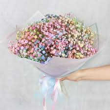
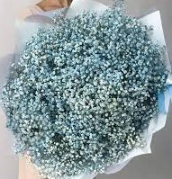
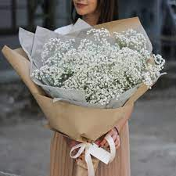
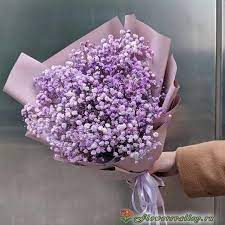

Гипсофилы
Гипсофила символизирует чистоту сердца, искренность и счастье. Этот цветок часто используется в качестве одного из важных изобразительных средств в икибане, где каждый компонент цветочного произведения имеет глубокий философский смысл.
-

Цветные
Гипсофила крайне стойкая, и даже превращаясь в сухоцвет не теряет своего шарма. При покупке, важно обратить внимание, чтобы растение не было влажным, иначе оно не засохнет, а начнет гнить.
Читать
-

Голубые
Всего насчитывают 150 видов гипсофилы. Англичане провозгласили это растение «дыханием ребенка».
Читать
-

Белые
В простонародье гипсофила популярна как перекати-поле, так как образует шары в диаметре до 1-1,5 м, сплошь усыпанные крошечными цветочками.
Читать
-

Фиолетовые
Зимой или осенью стебли обламываются ветром и улетают на огромные расстояния, пока пойма реки, овраг или лесополоса не задерживают собой гербарий гипосфилы. Видимо, так и появилось символическое обозначение гипсофилы - легкомыслие.
Читать
Уход за гипсофилой в вазе
Как и любые срезанные цветы, букет из гипсофилы ставится в чистую вазу с водой. Но для начала удалите со стеблей все листья, это необходимо для предотвращения образования бактерий и вредоносных грибков. Такое растение при ежедневной смене воды и подрезании острым ножом, простоит около месяца. А если ее засушить, она превратится в сухоцвет и будет радовать вас, не потеряв при этом первоначального вида.
Сколько держится композиция из гипсофилы?
Само по себе растение не дарят, гипсофилу больше комбинируют с розами, орхидеями, тюльпанами и т.д. В случае увядания, достаньте гипсофилу и поставьте в холодную воду комнатной температуры, она будет радовать вас еще парочку недель. Для более яркой композиции, добавьте засохшие цветы лаванды или прочие сухоцветы. Сохранить гипсофилу в коробке не сложно, на дне расположена влажная губка, по мере её подсыхания поливайте ее из шприца или из лейки с тоненьким носиком.
Сколько живет букет из гипсофилы?
Флористы заверяют, что срок хранения в воде при правильном уходе составляет порядка одного месяца. Если вы планируете засушить композицию, не ставьте её в воду, стечением времени она подсохнет, но не завянет, а, следовательно, сохранит свой первозданный вид. Букет из сухих цветов сохранит свой презентабельный вид около трех месяцев.